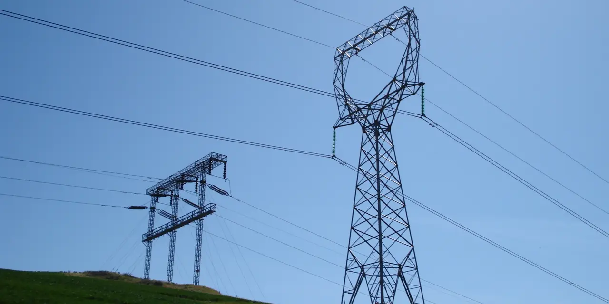

앞으로 10년의 에너지 문제를 이야기할 때 가장 먼저 정리해야 할 것은 “석유가 부족합니까”가 아니라 “전기를 얼마나 더 안정적으로 만들어야 합니까”입니다. 인공지능 데이터센터, 전기차, 냉방 수요, 공장 자동화, 전력화된 난방과 산업 설비가 모두 같은 방향으로 움직이면 병목은 연료 이름이 아니라 전력망과 발전 용량에서 먼저 드러납니다.
현재 세계 전력 수요를 연간 약 3만TWh로 놓고, IEA의 2026년 전력 전망에서 제시한 2026~2030년 연평균 3.6% 증가 흐름을 10년 시계로 연장해 보면 2035년에는 연간 약 4만2천TWh 안팎까지 늘 수 있습니다. 보수적으로 잡아도 매년 추가로 필요한 전력은 1만TWh 이상입니다. 이는 지금 일본, 인도, 유럽 주요국 몇 곳의 전력 소비를 합친 것과 비교해야 할 정도의 큰 숫자입니다.
가장 현실적인 답은 한 가지 에너지원이 아닙니다. 태양광과 풍력은 가장 많은 신규 전력 물량을 맡고, 가스 발전은 전력망이 흔들릴 때 즉시 켜지는 유연성을 맡고, 원전은 밤낮과 날씨에 덜 흔들리는 기저 전력을 맡고, 송전망과 저장장치는 이 모든 발전원을 실제 소비지까지 옮기는 역할을 맡아야 합니다. 에너지 부족의 해법은 발전소 숫자가 아니라 조합의 순서입니다.
10년 뒤 부족분은 전기에서 가장 먼저 보입니다

세계 에너지 수요 전체를 보면 석유, 가스, 석탄, 전기, 열수요가 모두 섞입니다. 그러나 투자자가 가장 먼저 봐야 할 병목은 전기입니다. 전기는 저장이 어렵고, 수요가 몰리는 시간에 즉시 공급되어야 하며, 발전소가 있어도 송전망이 부족하면 소비지까지 도착하지 못합니다.
IEA 세계 에너지 전망이 반복해서 강조하는 흐름도 이 지점입니다. 전력화는 에너지 전환의 중심이지만, 전력화는 발전량뿐 아니라 계통 보강을 요구합니다. 전기차가 늘고, 데이터센터가 늘고, 냉방 수요가 늘고, 공장이 전기 설비를 더 많이 쓰면 기존 발전소의 평균 발전량만으로는 답이 되지 않습니다. 필요한 것은 “언제든 쓸 수 있는 전력”입니다.
그래서 10년 뒤 필요한 추가 전력을 단순히 1만TWh라고 부르는 것만으로는 부족합니다. 이 전력이 한낮에만 필요한지, 밤에도 필요한지, 겨울 피크에 필요한지, 여름 냉방 피크에 필요한지에 따라 답이 달라집니다. 태양광은 낮 시간 물량을 빠르게 늘릴 수 있지만, 밤 피크와 긴 흐린 날에는 다른 자원이 필요합니다. 풍력은 지역과 계절에 따라 강하지만, 전력망 연결이 늦으면 좋은 바람도 실제 전기가 되지 못합니다.
재생에너지는 물량을 맡고 송전망은 시간을 맞춥니다
관련 영상
폭발적인 전력수요 속 '이주식' 먼저 떠오릅니다ㅣ김효식 삼성액티브자산운용 팀장 [2부]
추가 전력의 가장 큰 물량은 태양광과 풍력이 맡을 가능성이 큽니다. 이유는 단순합니다. 새 원전이나 대형 수력보다 건설 기간이 짧고, 모듈 단가가 낮아졌고, 자본이 프로젝트 단위로 빠르게 들어갈 수 있기 때문입니다. 향후 10년 부족분 중 절반 이상은 재생에너지 증설이 맡는 것이 가장 현실적인 출발점입니다.
그러나 재생에너지의 약점은 발전량 자체보다 시간입니다. 전기는 필요한 시간에 있어야 가치가 있습니다. 태양광이 낮에 많이 나오면 저녁 피크를 위해 저장장치가 필요하고, 풍력 단지가 소비지에서 멀면 송전망이 필요합니다. 그래서 GE 버노바와 이튼 같은 전력 인프라 기업을 볼 때도 “재생에너지가 늘어난다”보다 “그리드 장비 수주, 변압기 납기, 가스터빈 슬롯, 전력 관리 장비 마진이 실제로 좋아지고 있는가”를 봐야 합니다.
IEA의 전력망 보고서가 중요한 이유도 여기에 있습니다. 발전소만 늘리고 송전망을 미루면 전력 부족은 해결되지 않습니다. 전력망은 눈에 덜 띄지만, 앞으로 10년 에너지 부족을 메우는 데 사실상 두 번째 발전소 역할을 합니다. 같은 발전량이라도 송전 혼잡이 줄고 저장장치와 수요반응이 붙으면 실제로 쓸 수 있는 전력은 늘어납니다.
가스와 원전은 남은 빈칸을 서로 다른 방식으로 채웁니다
현실적인 답에서 가스를 빼기는 어렵습니다. 기후 관점에서는 논쟁이 있지만, 계통 운영 관점에서는 가스 발전이 빠르게 켜지고 꺼질 수 있다는 장점이 큽니다. 태양광과 풍력이 빠르게 늘어날수록 전력망은 유연한 백업 전원을 더 필요로 합니다. 특히 데이터센터, 병원, 제조 클러스터처럼 전력 품질이 중요한 고객은 “평균적으로 전기가 많다”가 아니라 “끊기지 않는다”를 원합니다.
엑슨 모빌 같은 전통 에너지 기업을 이 글의 관련종목에 넣은 이유도 여기에 있습니다. 원유 수요만으로 보는 전통 에너지보다 LNG, 가스 인프라, 전력용 연료 수요가 더 중요해질 수 있습니다. 다만 가스가 모든 답은 아닙니다. 연료 가격 변동, 메탄 배출, 규제 압박, 장기 탈탄소 목표가 함께 붙습니다. 따라서 새 가스 발전은 무조건적인 성장 스토리가 아니라, 재생에너지와 원전이 채우지 못하는 시간대를 보완하는 보험에 가깝습니다.
원전의 역할은 가스와 다릅니다. 원전은 빠르게 늘리기 어렵지만, 이미 운영 중인 원전의 수명 연장과 가동률 개선은 전력 부족 국면에서 큰 의미가 있습니다. 콘스텔레이션 에너지는 이런 관점에서 봐야 합니다. 새 원전을 단기간에 많이 짓는 회사가 아니라, 이미 보유한 원전 전력을 장기 계약과 안정적 가동률로 현금흐름화할 수 있는 회사에 가깝습니다.
원전은 날씨와 시간에 덜 흔들리는 기저 전력입니다. 이 장점은 AI 데이터센터와 대형 제조업 전력 수요가 커질수록 더 부각됩니다. 반대로 정비 일정, 규제 승인, 핵연료 조달, 정치적 수용성은 반드시 확인해야 합니다. 원전은 중요한 해법이지만, 10년 안에 부족분 전체를 혼자 채울 수 있는 해법은 아닙니다.
가장 현실적인 답은 발전량보다 순서입니다
향후 10년 부족한 에너지를 현실적으로 메우는 순서는 이렇게 보는 편이 맞습니다. 첫째, 태양광과 풍력으로 가장 싼 신규 전력 물량을 빠르게 늘립니다. 둘째, 송전망, 변압기, 배전 장비, 저장장치, 수요반응으로 그 전기를 실제 소비 시간과 장소에 맞춥니다. 셋째, 가스 발전을 피크와 백업 전원으로 유지해 계통 신뢰도를 확보합니다. 넷째, 기존 원전의 수명 연장과 가동률을 지켜 무탄소 기저 전력을 잃지 않습니다. 다섯째, 에너지 효율과 피크 관리로 필요한 발전소 규모 자체를 줄입니다.
숫자로 단순화하면, 2035년까지 추가로 필요한 연간 전력 1만~1만2천TWh 중 가장 큰 몫은 재생에너지가 맡고, 나머지 안정성은 가스·원전·수력·저장장치·송전망이 나눠 맡는 조합이 현실적입니다. 재생에너지는 물량을 만들고, 가스는 비는 시간을 메우고, 원전은 안정적인 기저 전력을 주고, 송전망은 이 모든 것을 연결합니다.
투자자가 볼 지표도 이 순서와 같아야 합니다. GE 버노바는 가스터빈과 그리드 장비 수주가 매출과 현금흐름으로 넘어가는 속도, 이튼은 전력 관리 장비의 주문잔고와 마진, 콘스텔레이션 에너지는 원전 가동률과 장기 전력 계약, 엑슨 모빌은 가스와 LNG가 실제 현금흐름과 주주환원으로 연결되는지를 확인해야 합니다. 전력 부족의 수혜주는 “전기가 부족하다”는 말이 아니라 “부족한 전기를 제시간에 공급하게 만드는 병목을 해결한다”는 숫자로 증명돼야 합니다.
결론은 분명합니다. 앞으로 10년의 부족한 에너지는 한 가지 에너지원으로 해결되지 않습니다. 재생에너지만으로는 시간 문제가 남고, 가스만으로는 비용과 탄소 문제가 남고, 원전만으로는 속도 문제가 남습니다. 가장 현실적인 답은 재생에너지 대량 증설, 가스의 유연성, 원전의 기저 전력, 송전망과 저장장치 투자를 동시에 진행하는 것입니다. 이 조합을 먼저 이해해야 전력 부족이 공포가 아니라 투자자가 확인할 수 있는 산업 지도로 보입니다.